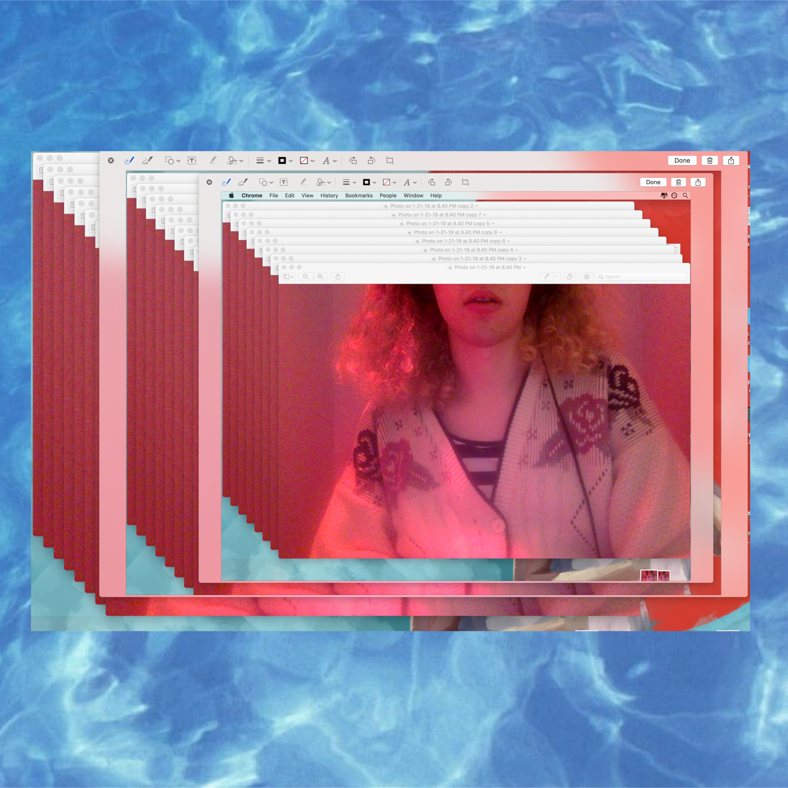

I am finishing up an album, and expect to release sometime between Fall 2019 and Spring 2020.
This will probably be the cover, and it'll probably be called willowisp, but who knows? Not me.
single : mo(u)rning song - 2019
m(o)urning song was written as a final project for a Neuroscience of the Arts class I took at Oberlin.
Among other things, it's about change, grief, and the complicated relationships we maintain with our alarm clocks.